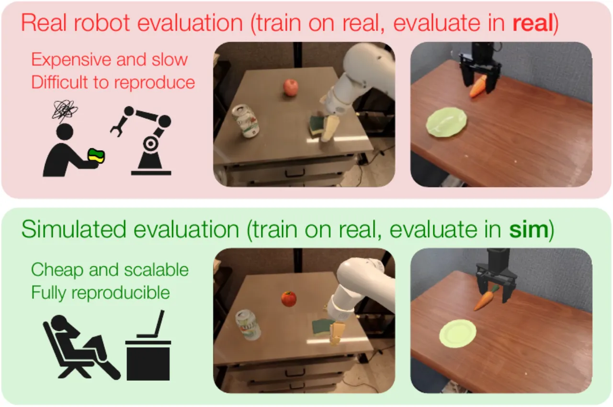
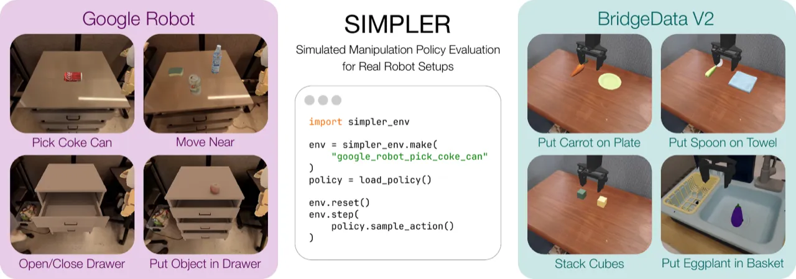
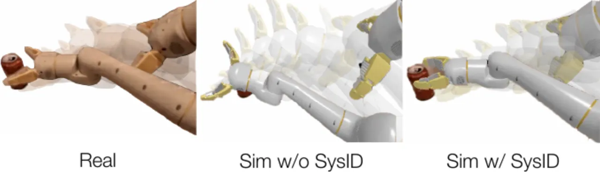
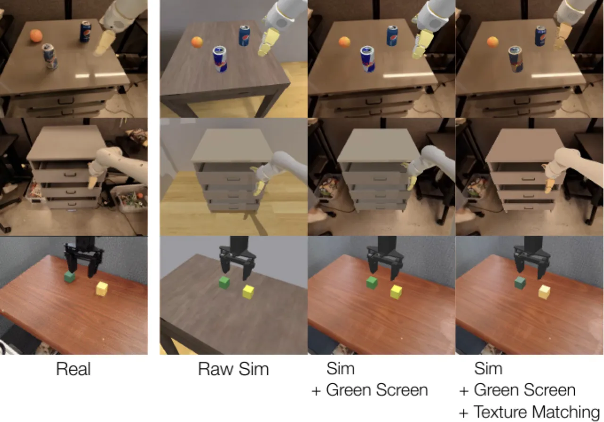
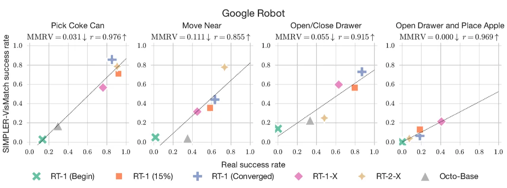

真实机器人评估代价高昂、难以规模化。本文提出 SIMPLER（Simulated Manipulation Policy Evaluation for Real Robot Setups），通过系统辨识缩小控制间隙、"Visual Matching"方法缩小视觉间隙，在仿真中对真实策略进行评估，实现与真实世界强相关的可复现评估流程。
随着通用机器人操作策略（如 RT-1、RT-2、Octo）的迅速发展，对其进行全面评估的代价也在急剧上升——真实世界评估需要大量人力、时间，且难以复现。本文核心问题是：能否将在真实数据上训练的策略放入仿真环境中评估，并使仿真结果与真实表现保持高度相关？
"Real-world evaluation of such policies is not scalable and faces reproducibility challenges, which are likely to worsen as policies broaden the spectrum of tasks they can perform."

现有数字孪生（digital twin）方案需要大量手工建模，不具备规模化潜力。本文的关键洞察是：不需要精确复刻真实环境，只需仿真策略排名与真实排名高度一致即可。为此，需解决两个核心间隙：控制间隙（control gap）和视觉间隙（visual gap）。

SIMPLER 通过两个主要技术消除真实与仿真之间的差距：（1）系统辨识（System Identification, SysID）消除控制间隙；（2）Visual Matching（绿幕背景 + 纹理匹配）消除视觉间隙。
控制间隙的核心问题是：在仿真中回放真实动作序列时，机器人末端执行器轨迹与真实不符，导致抓取失败。本文通过最小化如下损失来优化仿真控制器的 PD 参数（刚度 p 与阻尼 d）：
利用离线数据集（如 RT-1 或 BridgeData V2 演示），无需进行额外真实数据采集，即可完成系统辨识。

视觉差异会导致策略在仿真中表现失真。Visual Matching 包含两个步骤：
作为对比，本文还探索了另一种方法：Variant Aggregation——对场景视觉属性（背景、灯光、桌面纹理等）进行大量随机化，通过在多个变体上平均结果来获得鲁棒估计。实验表明 Visual Matching 效果更优。

传统 Pearson 相关系数存在两个缺陷：（1）只关注线性关系；（2）对真实性能接近的策略极为敏感。本文提出新指标 Mean Maximum Rank Violation (MMRV)（范围 [0,1]，越低越好），通过加权排名违反幅度来更准确地刻画仿真评估质量：
在 Google Robot（RT-1、RT-1-X、RT-2-X、Octo-Base）和 WidowX (BridgeData V2) 上进行配对 sim-and-real 评估，对比 SIMPLER 与验证集 MSE 等基线方法的策略排名质量。

核心数值结果（Google Robot，6个策略检查点对比）：
| 评估方法 | Pick Coke Can MMRV ↓ | Drawer MMRV ↓ | 平均 MMRV ↓ | 平均 Pearson r ↑ |
|---|---|---|---|---|
| Validation MSE | 0.412 | 0.306 | 0.375 | 0.308 |
| SIMPLER-VarAgg（ours） | 0.084 | 0.235 | 0.143 | 0.778 |
| SIMPLER-VisMatch（ours） | 0.031 | 0.027 | 0.056 | 0.924 |
"Simulated manipulation policy evaluation with SIMPLER leads to strong correlation with real-world policy performance, and we recommend SIMPLER-'Visual Matching' as the default approach since it directly minimizes visual discrepancies between real and simulated environments."
本文进一步验证 SIMPLER 能否准确预测策略对分布偏移的敏感性，对比了背景、灯光、干扰物、桌面纹理、相机位姿等 5 类分布偏移轴。关键发现：
视觉匹配消融（Google Robot Drawer 任务，3 个策略）：
| Green Screen | Drawer Matching | Robot Matching | MMRV ↓ | Real-Sim Success Gap ↓ |
|---|---|---|---|---|
| ✗ | ✗ | ✗ | 0.087 | 0.272 |
| ✓ | ✗ | ✗ | 0.087 | 0.198 |
| ✓ | ✓ | ✗ | 0.142 | 0.253 |
| ✓ | ✓ | ✓ | 0.050 | 0.136 |
仅部分应用 Visual Matching（如只匹配抽屉而不匹配机械臂）反而会导致 MMRV 变差，说明场景各部分的视觉一致性至关重要，需整体应用。
控制消融：SIMPLER SysID 方案的控制损失（0.131）和 MMRV（0.031）均优于两个替代参数设置（0.267/0.070 和 0.432/0.100）。
物理属性敏感性（质量、摩擦系数等）：在合理参数范围内，SIMPLER 评估保持稳定（低 MMRV、高 Pearson r）。
物理仿真器无关性：在 Isaac Sim 上复现 SIMPLER（Variant Aggregation），同样获得与 SAPIEN 相近的强相关性，说明框架不依赖特定物理引擎。
当前 SIMPLER 环境专注于物理仿真相对简单的刚体抓取与操作任务。许多近期研究已展示了布料、流体等软体对象的操作能力，但这类任务的仿真物理远未成熟，将 SIMPLER 扩展到柔性/软体对象操作（如利用 IPC 等软体物理仿真）是未来的重要研究方向。
"Green-screening" 方法要求场景中的相机位置固定（fixed cameras），无法处理动态视角变化，且在合成图像时难以还原物体阴影、反射等精细视觉特征，可能对部分对视觉敏感的策略造成影响。
当前构建 SIMPLER 评估环境的流程（资产整理、场景组装、纹理匹配等）仍需要人工参与，尚未实现全自动化。实现从真实场景图像全自动生成大规模高保真仿真评估环境是雄心勃勃的未来目标，需要场景重建、材质估计等多方面技术的进一步突破。